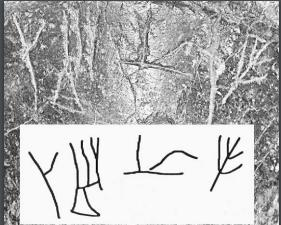

-
SYZa6
Names
SYZa6, SY Za 6
Support
Stone vessel
Location
Syme
Findspot
Unavailable

Scribe
Unavailable
Context
Middle Minoan IIB, IIIA
1750-1650 BCE
Dimensions
Catalogue
Readings
1 1 0 DA none
1 1 0 SE none
1 1 0 RA none
1 1 0 TE none
𐘀𐘈𐘴𐘃
DASERATE
𐘀𐘈𐘴𐘃
DASERATE
SY Za 6
(HM 5588) (ArchEph 2008, 198, 209-10), circular
serpentine Libation Table in the shape of a chalice (near a fire
associated with Building Ub;
MM
IIIA
context - "the earliest securely date inscribed libation table found in a
cult place"; H. ca. 11, D. ca. 11.8). The rim is well preserved; the
inscription is written on the wall of the vessel, just below the rim.
DA-
SE
-RA-TE
the signs are shallowly
scratched into the stone; SE has a triangular base; cf. HT Zb
158a.
Commentary © John Younger
References